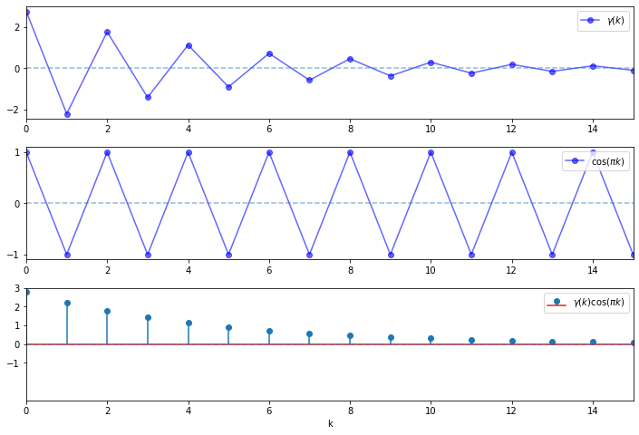
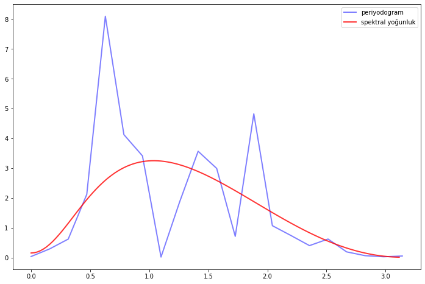
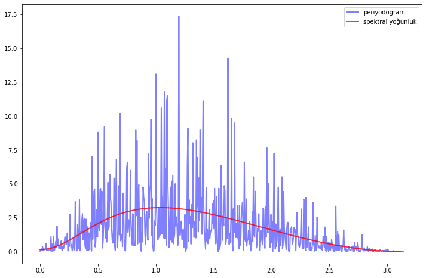

Zaman Serileri Analizi 6: Spektral Analiz ve Zaman Serileri Filtreleri
Zaman serileri
Author
Murat Öztürkmen
Published
January 15, 2022
1. Giriş
Önceki yazılarımızda özellikle iktisadi ve finansal zaman serilerinde sıklıkla görülen ortak değişen durağan doğrusal olasılıksal (covariance stationary linear stochastic processes) süreçlerle ilgilenmiştik. Buradaki modeller esasen hem zaman alanında hem de frekans alanındadır.
ARMA süreçleri belli sayıda parametreye sahiptir ve zaman serileri analizinin standart teorisi için bir köşetaşıdır. Her ARMA süreci, doğrusal durum uzayı (linear state space) biçiminde gösterilebilir.
Frekans alanındaki analiz aynı zamanda spektral analiz (spectral analysis) olarak adlandırılır. Özünde, spektral analiz, eşdeğişen durağan bir sürecin özdeğişim fonksiyonunun alternatif bir temsilini sağlar.
Fourier dönüşümü ve tersi, iki temsil arasında eşleme yapmak için kullanılır. Bu yazıda spektral analizle ilgili bazı temel kavramlara değindikten sonra zaman serilerinde bazı filtreler göz atacağız.
2. Spektral Analiz
2.1. Spektral Yoğunluklar
\(\left\{X_{t}\right\}\), \(\sum_{k} \gamma(k)^{2}<\infty\) koşulunu sağlayan özdeğişim fonksiyonu \(\gamma\) ile ortak değişen durağan süreç olsun. \(\left\{X_{t}\right\}\) nin spektral yoğunluğu (spectral density) olan \(f\), özdeğişim fonksiyonu \(\gamma\) nın, kesikli zaman Fourier dönüşümü (discrete time Fourier transform ) olarak tanımlanır:
\(\left\{\varepsilon_{t}\right\}\) biçiminde, \(\sigma\) standart sapmaya sahip bir beyaz gürültü süreci düşünelim. Bu durumda, \(f(\omega)=\sigma^{2}\) olacaktır. Dolayısıyla \(f\) sabit bir fonksiyondur. Bu, “tüm frekansların eşit olarak mevcut olduğu” şeklinde yorumlanabilir. Beyaz ışığın, eğer frekans, beyaz gürültü teriminin kökenini sağlayan bir bağlantı olan görünür spektruma atıfta bulunduğunu düşünürsek, tam da bu özelliğe sahiptir diyebiliriz.
Örnek: AR, MA ve ARMA
\(X_{t}=\theta \varepsilon_{t-1}+\varepsilon_{t}\) biçimindeki \(\operatorname{MA}(1)\) süreci için spektral yoğunluk fonksiyonu:
Biçimsel olmayan bir şekilde, özdeğişim fonksiyonunun yaklaşık olarak büyük sönümlü döngüler sergiler gibi göründüğü \(\omega \in[0, \pi]\) aralığında, spektral yoğunluğun da büyük olduğunu düşünebiliriz. Bunu görmek için, önceki grafiğin alt panelinde, \(\phi=-0.8\) durumu için spektral yoğunluğun \(\omega=\pi\) noktasında neden büyük olduğunu düşünelim. Spektral yoğunluk fonksiyonunun aşağıdaki gibi yazıldığını hatırlayalım:
Bunu \(\omega=\pi\) noktasında ele alırsak, \((-0.8)^{k}\) pozitif iken \(\cos (\pi k)\) büyük ve pozitif olduğundan, büyük bir sayı görürüz; \((-0.8)^{k}\) negatif iken, mutlak değer olarak büyük ve negatif bir sayı görürüz.
Dolayısıyla çarpım her zaman büyük ve pozitiftir ve bu nedenle yukarıdaki denklemin sağ tarafındaki çarpımların toplamı büyüktür. Bunları, yatay eksende \(k\) olacak şekilde çizelim:
ϕ =-0.8times =list(range(16))y1 = [ϕ**k / (1- ϕ**2) for k in times]y2 = [np.cos(np.pi * k) for k in times]y3 = [a * b for a, b inzip(y1, y2)]num_rows, num_cols =3, 1fig, axes = plt.subplots(num_rows, num_cols, figsize=(12, 8))plt.subplots_adjust(hspace=0.25)# ϕ = -0.8 iken özdeğişimax = axes[0]ax.plot(times, y1, 'bo-', alpha=0.6, label='$\gamma(k)$')ax.legend(loc='upper right')ax.set(xlim=(0, 15), yticks=(-2, 0, 2))ax.hlines(0, 0, 15, linestyle='--', alpha=0.5)# π frekansında döngülerax = axes[1]ax.plot(times, y2, 'bo-', alpha=0.6, label='$\cos(\pi k)$')ax.legend(loc='upper right')ax.set(xlim=(0, 15), yticks=(-1, 0, 1))ax.hlines(0, 0, 15, linestyle='--', alpha=0.5)# çarpımax = axes[2]ax.stem(times, y3, label='$\gamma(k) \cos(\pi k)$')ax.legend(loc='upper right')ax.set(xlim=(0, 15), ylim=(-3, 3), yticks=(-1, 0, 1, 2, 3))ax.hlines(0, 0, 15, linestyle='--', alpha=0.5)ax.set_xlabel("k")plt.show()

Öte yandan, \(f(\omega)\) fonksiyonunu \(\omega=\pi / 3\) noktasında ele alırsak, döngüler eşleşmez, \(\gamma(k) \cos (\omega k)\) dizisi hem pozitif hem de negatif terimler içerir ve bu nedenle bu terimlerin toplamı çok daha küçüktür.
ϕ =-0.8times =list(range(16))y1 = [ϕ**k / (1- ϕ**2) for k in times]y2 = [np.cos(np.pi * k/3) for k in times]y3 = [a * b for a, b inzip(y1, y2)]num_rows, num_cols =3, 1fig, axes = plt.subplots(num_rows, num_cols, figsize=(12, 8))plt.subplots_adjust(hspace=0.25)# phi = -0.8 iken özdeğişimax = axes[0]ax.plot(times, y1, 'bo-', alpha=0.6, label='$\gamma(k)$')ax.legend(loc='upper right')ax.set(xlim=(0, 15), yticks=(-2, 0, 2))ax.hlines(0, 0, 15, linestyle='--', alpha=0.5)# π frekansında döngülerax = axes[1]ax.plot(times, y2, 'bo-', alpha=0.6, label='$\cos(\pi k/3)$')ax.legend(loc='upper right')ax.set(xlim=(0, 15), yticks=(-1, 0, 1))ax.hlines(0, 0, 15, linestyle='--', alpha=0.5)# çarpımax = axes[2]ax.stem(times, y3, label='$\gamma(k) \cos(\pi k/3)$')ax.legend(loc='upper right')ax.set(xlim=(0, 15), ylim=(-3, 3), yticks=(-1, 0, 1, 2, 3))ax.hlines(0, 0, 15, linestyle='--', alpha=0.5)ax.set_xlabel("$k$")plt.show()
Spektral yoğunluğun, ortak değişen durağan bir sürecin özdeğişim yapısı üzerinde frekansa dayalı bir bakış açısı sağlaması açısından faydalı olduğunu gördük. Spektral yoğunluğun yararlı olmasının bir başka nedeni de, ters Fourier dönüşümü (inverse Fourier Transformation) yoluyla özdeğişim fonksiyonunu kurtarmak için ters çevrilebilir olmasıdır.
Bu, spektral yoğunluğun hesaplanması ve işlenmesinin özdeğişim fonksiyonundan daha kolay olduğu durumlarda uygun bir yöntemdir.
2.4. Periodogram
Burada, verilerden spektral yoğunlukları ve diğer ilgili miktarları tahmin etme sorununu ele alacağız. Spektral yoğunluk tahminleri, periodogram olarak bilinen araç kullanılarak hesaplanır - bu da ünlü hızlı Fourier dönüşümü (fast Fourier transformation) ile hesaplanır. Temel teknik açıklandıktan sonra, bunu birkaç temel makroekonomik zaman serisinin analizine uygulayacağız. Burada kullanacağımız özel bir çerçeve quantecon çerçevesi olacak. Diğer çerçeveler gibi, bu çerçeveyi de kurmak oldukça kolay:
pip install quantecon
import quantecon as qe
Bir özdeğişimin spektral yoğunluğu \(f\) durağan süreç \(\gamma\) özilinti fonksiyonu ile yazılabilir:
Şimdi, \(\gamma\) bilinmediğinde belirli bir zaman serisinin spektral yoğunluğunu tahmin etme problemini ele alalım. \(X_{0}, \ldots, X_{n-1}\), ortak değişen durağan olduğu varsayılan tek bir zaman serisinin \(n\) adet ardışık gözlemi olsun. Bu işlemin spektral yoğunluğunun en yaygın tahmincisi, \(X_{0}, \ldots, X_{n-1}\) dizisini periodogramıdır ve şu şekilde tanımlanır:
Hangi durumda, \(I\left(\omega_{j}\right)\), \(f\left(\omega_{j}\right)\)’nin bir tahmincisidir? Bunun için birkaç cebirsel işlemden sonra aşağıdaki eşitliği elde ederiz:
\[
n I\left(\omega_{j}\right)=\sum_{t=0}^{n-1}\left(X_{t}-\bar{X}\right)^{2}+2 \sum_{k=1}^{n-1} \sum_{t=k}^{n-1}\left(X_{t}-\bar{X}\right)\left(X_{t-k}-\bar{X}\right) \cos \left(\omega_{j} k\right)
\]
Bu, özdeğişim fonksiyonu \(\gamma\)’nın doğal eklenebilir tahmincisi (plug-in estimator) olan örneklem özdeğişim fonksiyonudur. Bu notasyonla aşağıdaki eşitliği yazabiliriz:
Periyodogramı hesaplamanın en yaygın yolu, hızlı Fourier dönüşümü algoritması aracılığıyla uygulanan ayrık Fourier dönüşümüdür. Genel olarak, \(a_{0}, \ldots, a_{n-1}\) olarak verilmiş bir dizide, ayrık Fourier dönüşümü aşağıdaki diziyi hesaplar:
burada \(\left\{\varepsilon_{t}\right\}\), birim değişintiye sahip beyaz gürültü sürecidir.
# örneklem boyutun =40# AR ve MA parametreleri ϕ, θ =0.5, (0, -0.8) lp = qe.ARMA(ϕ, θ)X = lp.simulation(ts_length=n)fig, ax = plt.subplots(figsize=(12, 8))x, y = qe.periodogram(X)ax.plot(x, y, 'b-', lw=2, alpha=0.5, label='periyodogram')x_sd, y_sd = lp.spectral_density(two_pi=False, res=120)ax.plot(x_sd, y_sd, 'r-', lw=2, alpha=0.8, label='spektral yoğunluk')ax.legend()plt.show()

Tahminler biraz kötü görünüyor. Bu örneklem boyutundan kaynaklı olabilir. n=1200 örneklem ile tekrar çalıştıralım:
# örneklem boyutun =1200# AR ve MA parametreleri ϕ, θ =0.5, (0, -0.8) lp = qe.ARMA(ϕ, θ)X = lp.simulation(ts_length=n)fig, ax = plt.subplots(figsize=(12, 8))x, y = qe.periodogram(X)ax.plot(x, y, 'b-', lw=2, alpha=0.5, label='periyodogram')x_sd, y_sd = lp.spectral_density(two_pi=False, res=120)ax.plot(x_sd, y_sd, 'r-', lw=2, alpha=0.8, label='spektral yoğunluk')ax.legend()plt.show()

Periyodogram, altta yatan spektral yoğunluğa göre çok düzensizdir. Bu da bizi, bir başka soruna götürür: düzgünleştirme.
2.5. Düzgünleştirme (Smoothing)
Burada birbiriyle bağlantılı iki problem var. Birincisi, hızlı Fourier dönüşümünün uygulanma şekli göz önüne alındığında, \(I(\omega)\) nin tahmin edildiği \(\omega\) gözlem noktalarının sayısı, veri miktarına paralel olarak artar. Başka bir deyişle, daha fazla veriye sahip olmamıza rağmen, onu daha fazla değer tahmin etmek için de kullanırız. İkinci bir problem, parametrik varsayımlar olmadan her türden yoğunluğun tahmin edilmesinin temelde zor olmasıdır. Tipik olarak, yoğunlukların parametrik olmayan tahmini, bir dereceye kadar düzgünleştirme gerektirir. Düzgünleştirmenin periodogramlara uygulanmasının standart yolu, yerel ortalamaların alınmasıdır. Başka bir deyişle \(I\left(\omega_{j}\right)\) yerine önceki değerlerin ağırlıklı ortalaması kullanılır:
Genel olarak, daha büyük \(p\) değerleri daha fazla düzgünleştirmeyi gösterir.
3. Zaman Serisi Filtreleri
Filtreler zaman serisinin taşıdığı trend, konjonktür, mevsimsellik ve düzensiz unsurları genellikle sabit bir hareketli ortalamalar filtresi uygulayarak ayrıştıran yöntemlerdir. Bu yöntemlerde tipik olarak serilerin ortasına denk gelen değerlere simetrik doğrusal filtreler uygulanırken, başına ve sonuna denk gelen değerlere asimetrik doğrusal filtreler uygulanmaktadır. Yöntemlerin amacı orijinal veriyi dairesel döngülerden arındırmaktır. Böylece düzgünleştirilmiş (smoothing) bir trend tahmini yapmak mümkün olacaktır.
Filtre bazlı yöntemlerde unsurların açık bir model yardımıyla modellenmesi gerekmemektedir. Düzensiz unsurlar mevsimsel sıklığa bağlı olarak düzleştirilmiş bir trend tahmini sonrasında bulunur. Bu yöntemlerde düzeltme sürecinin özellikleri kullanılan filtrenin özellikleri ile doğrudan bağlantılıdır.
Burada, filtrelerin nasıl çalıştığını gösterebilmek için, Türkiye için, 2000-01-01:2021-09-01 dönemine ait aylık işsizlik oranı ve TÜFE ile çeyreklik Reel GSYH verileri üzerinde çalışacağız. Verileri pandas_datareader çerçevesi ile FRED den çalışma ortamına alacağız:
import statsmodels.api as sm# döngüsel ve trend bileşenlerigsyh_döngüsel_bileşen, gsyh_trend_bileşeni = sm.tsa.filters.hpfilter(reel_gsyh.log_gsyh)# bileşenlerden ayrı bir veri çerçevesi oluşturulmasıayrıştırılmış_gsyh = reel_gsyh[["log_gsyh"]].copy()ayrıştırılmış_gsyh["döngü"] = gsyh_döngüsel_bileşenayrıştırılmış_gsyh["trend"] = gsyh_trend_bileşeni
3.2. Baxter-King Yaklaşık Bant-Geçiren Filtre (Band-Pass Filter)
Baxter-King filtresinin, iş döngüsünün periyodikliği ile açıkça ilgilenmesi amaçlanmıştır. Bant geçiren filtrelerini bir seriye uygulayarak, konjonktürdekinden daha yüksek veya daha düşük dalgalanmalar içermeyen yeni bir seri üretirler. Spesifik olarak, BK filtresi simetrik hareketli ortalama şeklini alır:
\[
y_{t}^{*}=\sum_{k=-K}^{k=K} a_{k} y_{t-k}
\]
burada, \(a_{-k}=a_{k}\) ve \(\sum_{k=-k}^{K} a_{k}=0\), serideki herhangi bir trendi ortadan kaldırmak ve serinin \(I(1)\) veya \(I(2)\) olması durumunda onu durağan hale getirmek içindir. Burada filtre ağırlıkları aşağıdaki gibi belirlenir:
\[
\begin{gathered}
a_{j}=B_{j}+\theta \text { for } j=0, \pm 1, \pm 2, \ldots, \pm K \\
B_{0}=\frac{\left(\omega_{2}-\omega_{1}\right)}{\pi} \\
B_{j}=\frac{1}{\pi i}\left(\sin \left(\omega_{2} j\right)-\sin \left(\omega_{1} j\right)\right) \text { for } j=0, \pm 1, \pm 2, \ldots, \pm K
\end{gathered}
\]
burada burada \(\theta\), ağırlıkların toplamı sıfıra eşit olacak şekilde bir normalleştirme sabitidir:
Genel olarak, işsizlik düştüğünde, TÜFE’nin arttığını gözlemliyoruz.
3.3. Christiano-Fitzgerald Bant-Geçiren Filtre
Christiano-Fitzgerald filtresi, BK’nin bir genellemesidir ve bu nedenle ağırlıklı hareketli ortalama olarak da görülebilir. Bununla birlikte, CF filtresi tüm seriyi kullanmanın yanı sıra \(t\) için asimetriktir. Filtrenin uygulanması, aşağıdaki ağırlıkların hesaplanmasını içerir:
burada \(\tilde{B}_{T-t}\) ve \(\tilde{B}_{t-1}\), \(B_{j}\)’nin lineer fonksiyonlarıdır ve \(t=1,2, T-1\), ve \(T\) için değerler, yukarıda \(P_{U}\) ve \(P_{L}\) için hesaplandığı gibi hesaplanır.
İşsizlik ve TÜFE verilerine CF filtresini uygulayalım: